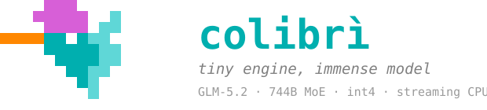

tiny engine, immense model
Run GLM-5.2 — a 744-billion-parameter Mixture-of-Experts — on your own machine. Pure C, zero dependencies, experts streamed from disk. From a 25 GB dev box to a six-GPU workstation: same engine, same container, the hardware only changes where the experts live.
# watch it think
A replay of the engine at work, paced to measured decode speeds from real hardware. Every token routes through 8 experts in each of 75 MoE layers — the grid on the right is all 19,456 experts: colour is the storage tier, brightness is routing heat, and every expert a token touches flashes white.
Simulation replays a fixed transcript at each profile's measured decode rate; TTFT shown is the measured value, not a live wait.
# the expert atlas
Routing affinity is measured, not assumed. Characterised experts cluster by what they actually fire on — poetry, law, Chinese, SQL, code, mathematics… Position below is measured routing affinity, not a learned embedding. Drag to spin.
# how it fits
A 744B MoE activates only ~40B parameters per token — and only ~11 GB of those change from token to token (the routed experts). colibrì keeps the dense weights resident and tiers the 19,456 experts (~19 MB each, int4) across three levels by measured heat:
VRAM
With CUDA or Metal, the hottest experts live on-device and are batched into grouped kernels. Six RTX 5090s hold the entire routed set: disk reads drop to zero.
RAM
The warm set is pinned in RAM (PIN_GB), guided by recorded usage stats, and served by AVX-512/NEON int4 kernels with an LRU cache behind it.
disk
Everything else streams from NVMe with io_uring, prefetched a layer ahead by the router. This is how 744B fits a 25 GB machine at all — the proven floor.
# the ladder
Same engine, same int4 container — measured decode on real machines, from the proven floor to full residency.
| hardware | decode | where the experts live | |
|---|---|---|---|
| 6× RTX 5090 · full residency | 5.8–6.8 tok/s | all in VRAM+RAM · disk 0 | |
| 128 GB CPU-only desktop | ~1.8 tok/s | hot set pinned in RAM | |
| single RTX 5070 Ti laptop-class | 1.07 tok/s | GPU-resident pipeline | |
| 25 GB dev box · cold | 0.05–0.1 tok/s | streamed from NVMe |
Full tables, methodology and quality ablations: docs/benchmarks.md